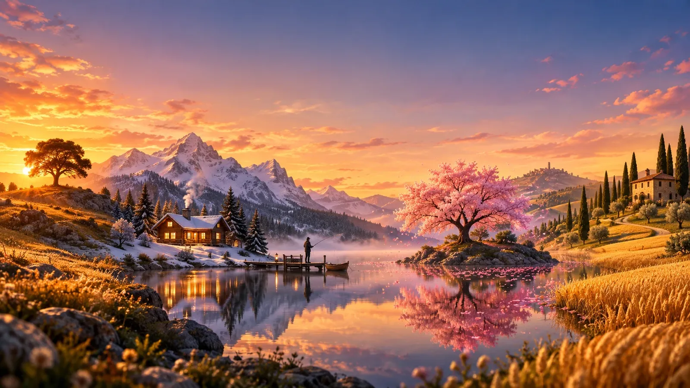
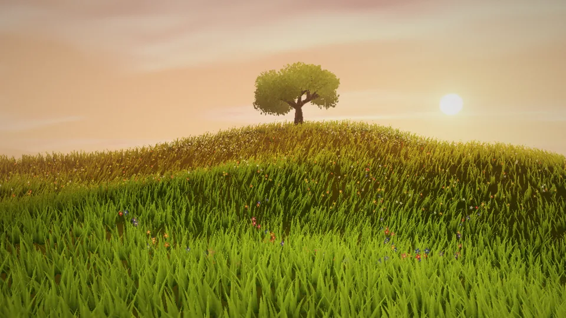
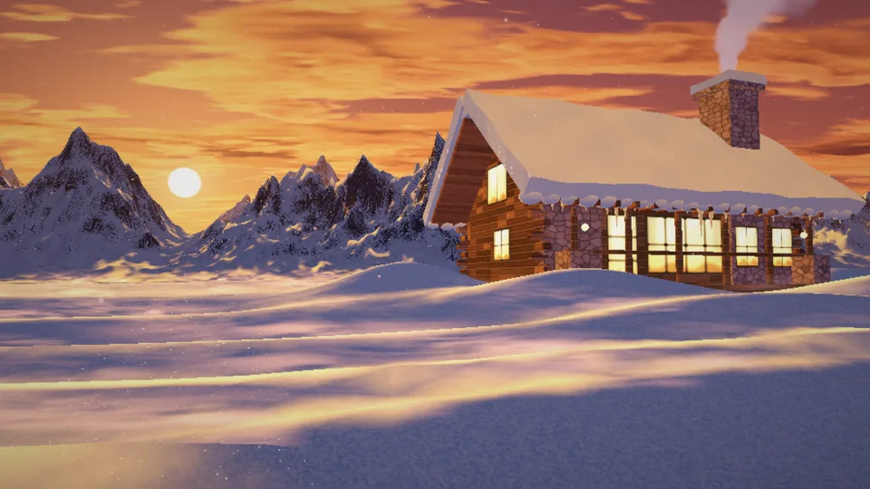
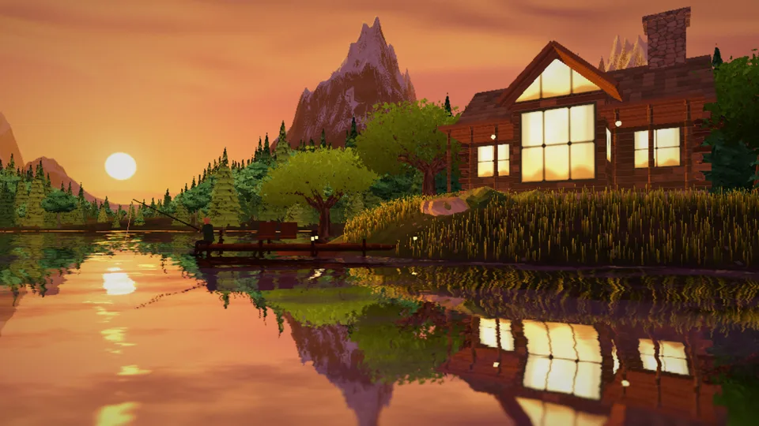
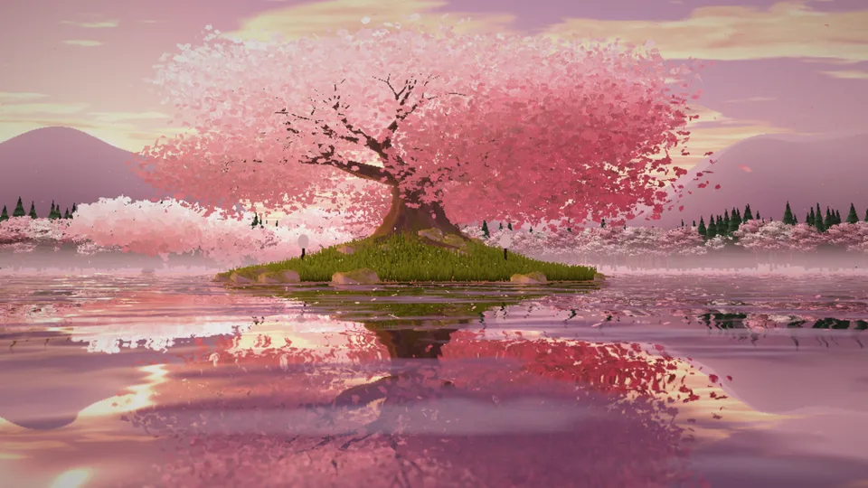
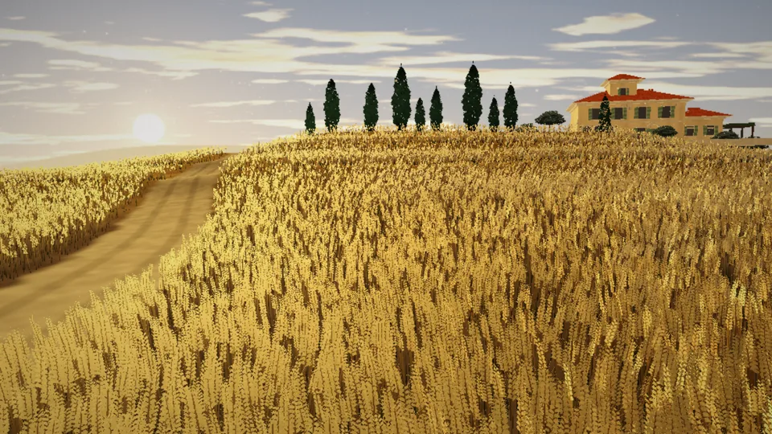

Rüzgârla nefes alan, gerçek güneşi şafaktan geceye takip eden ve imlecinin her hareketine tepki veren beş el yapımı 3D manzara.
YAKINDA MICROSOFT STORE'DA
Çimenli bir tepede yalnız bir ağaç. İmleç çimenleri aralar; gece zümrüt gibi parlar.

Derin karda bir kütük ev. Karda iz bırak, parıldayan kristalleri havalandır, bacadan tüten dumanı izle.

Göl kenarında bir ev ve iskelede bir balıkçı. Dalgalar imlecini suyun üzerinde takip eder.

Çiçek açmış bir kiraz ağacı. Tıkla, yapraklar dökülüp göle süzülsün.

Altın buğdaylar ve tepede bir villa. Başakları arala, polenler savrulsun; ay ışığı elini takip etsin.